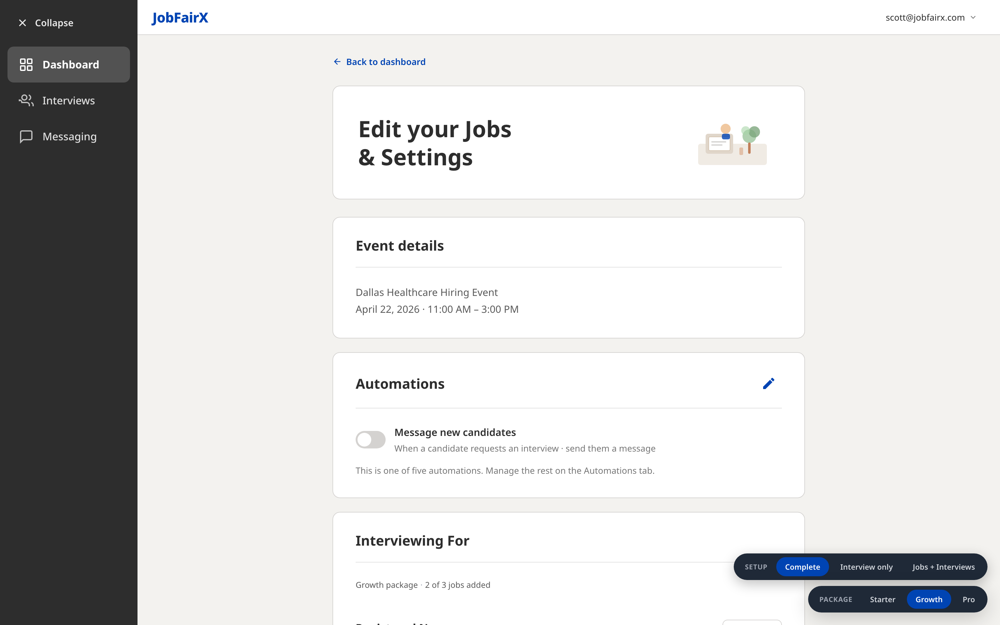
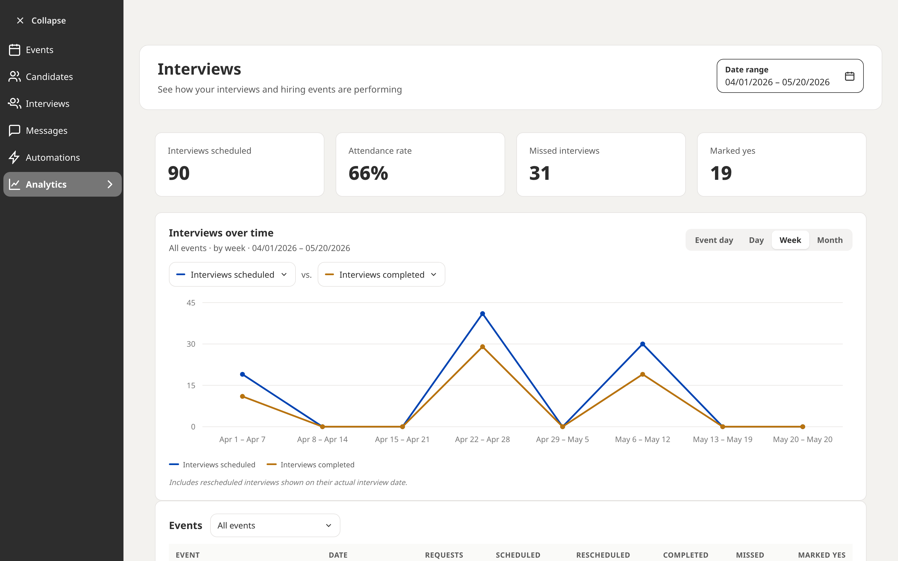

Healthcare
Nurses, techs, allied health and clinical support.
JobFairX matches qualified candidates to your open roles — and they request the interview. You accept, and it's scheduled. Run it by video, phone, or in person.

Trusted by 4,000+ hiring teams
You still join the Dallas Healthcare event — the matching, the requests and the schedule are unchanged. What's new is that you decide where your interviews actually happen. Set an address and your matched candidates get it on their confirmation and every reminder.

Real product view — the INTERVIEW LOCATION column. One employer, four events, a different interview location set on each.
Hiring events
Register for an event built around the people you're trying to hire — or host your own branded one.
Nurses, techs, allied health and clinical support.
Events built to widen the top of your funnel.
Reach transitioning service members and veterans.
Engineering, data, product and IT roles.
High-volume hiring for roles that move fast.
300+ cities nationwide
The difference
Every other hiring tool gives you a bigger pile to dig through. JobFairX turns the pipeline around: candidates are matched to your roles first, and the ones who want the job ask you for the interview.

Real product view — the candidate pipeline, filtered by Requested, Scheduled, Interviewed, No-show and Declined.
Four ways to interview
You set the interview location for each event you join, and candidates see exactly what to expect before they ever request a time.
Nothing to install, for you or the candidate. Join from the lobby, see who's waiting, and move to the next interview without leaving the page.
For roles where a phone screen is the right first step. Numbers, times and time zones are in the dashboard — candidates are told to expect your call.

Set a street address and suite for your interviews at that event. Candidates see it on their confirmation and their reminders — same scheduling, real room.
Already standardised on Zoom, Teams or Meet? Paste your link and JobFairX schedules around it. Your stack stays exactly as it is.
How it works
Seven steps, most of which happen without you.
Pick an upcoming event in your market — or host your own branded one.
Title, location, format. Reuse a previous post as a template.
Matched against what the role actually needs — not a keyword count.
They pick a time from your availability and ask. No cold outreach.
Accept, decline or propose a new time. Accepting schedules it.
Your interview location, set per event: JobFairX video, phone, in person, or your own link.
Feedback and analytics the moment it closes. Messaging and automations stay on.




AI candidate matching
Every candidate you see has been matched against the requirements you actually wrote — and has chosen to raise their hand for it.
Platform
Every event, its format, setup state, jobs and candidate counts in one row.
Requested, scheduled, interviewed, no-show, declined — with the action on the row.
Upcoming, pending and past, with the format of each interview on the line.

Talk to candidates in the platform. Filter by event and by job.
Messages that send as candidates move. Five presets are ready to switch on.

Scheduled vs. completed, attendance rate, missed interviews, per event.
Watch
Six minutes, start to finish — from registering for an event to making the offer.
Customer results
“This was our second event and we interviewed over 90 candidates in one day.”
“My team hired two LPNs, three RNs, and two MAs at the hiring event.”
“We've used JobFairX for three veterans events now. The candidates came prepared and were all qualified.”
Pricing
One price per event. Every package includes all four interview formats — video, phone, in person, or your own link.
Book a demo and we'll show you the next event in your market, and who's already in it.